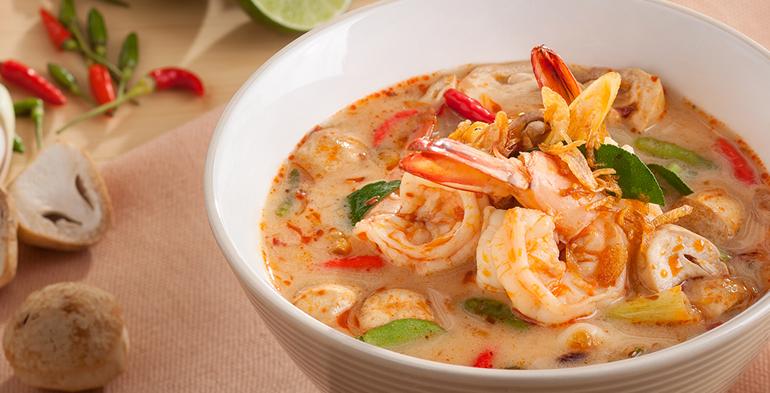

Tom Yum Goong
Tom Yum Goong is a traditional Thai soup characterised by its hot and sour flavours. It is generally made of shrimps and fresh Thai ingredients, such as lemongrass, kaffir lime leaves, lime juice, and fish sauce.
Ingredients
- 8 large green prawns
- 100g mixed seafood
- 400ml chicken stock (canned)
- 250ml water
- 2 tbsp dried shrimp (pounded)
- 4 red or green chillies (bruised)
- 3 kaffir lime leaves (shredded)
- 4 slices fresh or dried galangal
- 12cm lemongrass (only bulb end)
- 1 tbs sugar
- 3 tbsp lime juice
- 4 tbsp Squid Fish Sauce
- 1 cup straw mushrooms
- A pinch of salt
- 1 tbsp oil.
- Coriander (for garnishing)
Recipe Instructions
- Put about 2 liters of water in a pot to boil.
- I like to start by squeezing the limes. It’s best to have your limes squeezed so when you need them later, you don’t need to rush to squeeze them all. Slice about 10 limes and juice them into a bowl.
- Take the lemongrass, first tear off the outermost leaf and discard, then use a mallet to lightly pound the lemongrass to release the flavors. Slice the lemongrass diagonally into 1 inch strips only using the bottom 1/2 of the lemongrass stalk
- Take a thumb sized chunk of the root part of galangal, and chop it into slices.
- Coarsely tear about 10 kaffir lime leaves - tearing them will release their flavor
- Peel 5 cloves of garlic
- I used about 10 Thai bird chilies (prik kee noo), but you can use however many you’d like. Take off the stem, and either slice them, or give them a quick pound on your cutting board with a mallet.
- Add the lemongrass, galangal, kaffir lime leaves, garlic, and chilies into the pot of water.
- Now prepare your shrimp (or meat of choice), by deviening and cutting off the tentacles.
- Boil your soup with all the herbs for about 10 minutes, then toss in the shrimp and turn the fire to low heat.
- Then add your mushrooms, which you should pre rinse beforehand.
- Take two roma tomatoes and two small white onions, slice them into wedges, then add them to the tom yum.
- If you’re using shrimp, skim off any foam on the top of the soup.
- Boil the tom yum for about 2 - 3 minutes.
- Then add about 6 tablespoons of fish sauce, and 2 small teaspoons of sugar (or less).
- Boil the tom yum for another minute, then turn off the heat.
- Once your heat is off, go back to your lime juice and add about 8 tablespoons of lime juice (depending on how sour you like it, I like it really sour).
- Make sure you taste test until your tom yum is perfectly sour and salty. You might need to add more fish sauce or lime juice
- Finally, chop a handful of fresh cilantro, throw it in the soup, and give your tom yum a final stir. The lime juice and cilantro taste fresher and more vibrant when not boiled. That’s why your turn off the heat before adding them. For the creamy version of tom yum:
- I seperated about ? of the tom yum (from above) and set it aside as the clear version, and then made the other ? as the creamy version. But in any case, follow the same recipe, then continue.
- Turn your heat back on low.
- Add about 3 heaping tablespoons of Thai roasted chili sauce (nam prik pao ) and 10 tablespoons of evaporated milk. Fully dissolve the added ingredients.
- Taste test, you may need to add more lime juice or fish sauce.

All Rights Reserved